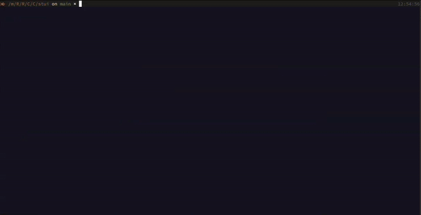
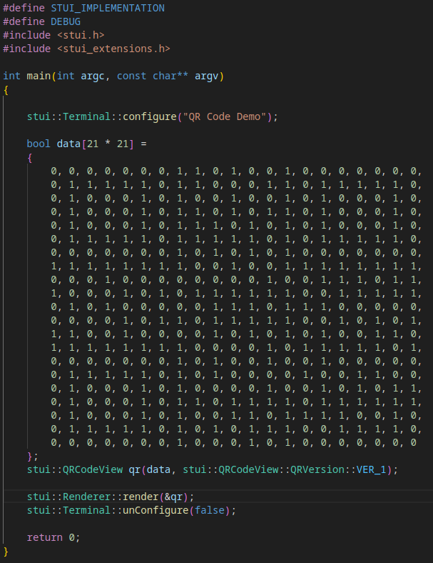
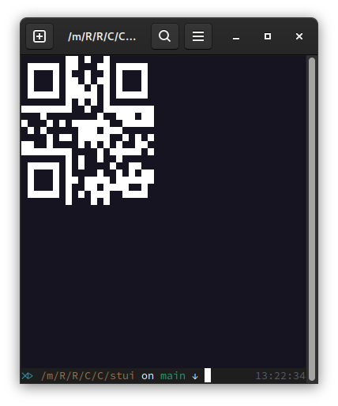
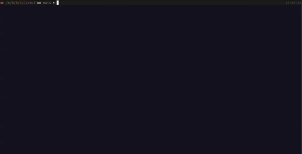
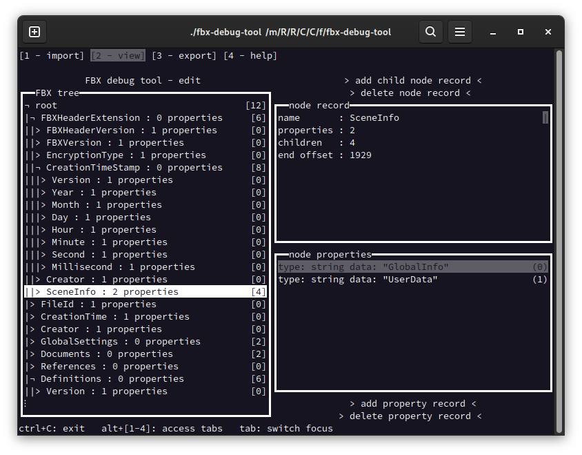
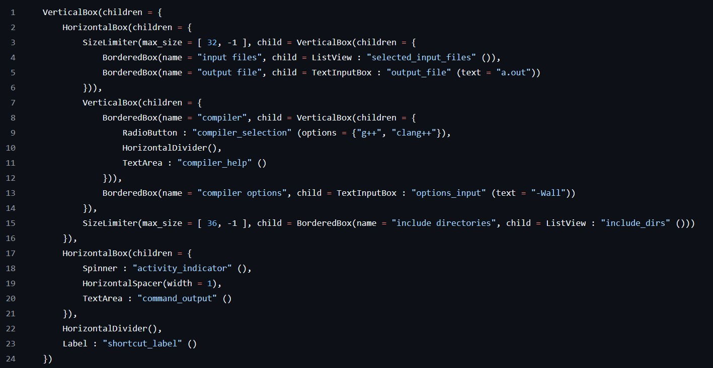

all of the demo projects you can see on this page are less than 300 lines of source for the UI, most are a lot less.



STUI is a Simple, header-only library for building Text UIs for terminal applciations.

i originally started developing this because i wanted a framework for building my FBX debug tool and showing graphical output in the command line. inspired by gitui and its amazing TUI, i went looking for appropriate libraries, but i couldn't find one which was header-only and light-weight enough for my purposes (and written for C++).
so i ended up writing this library! it's about 3000 lines long in total and provides a variety of widgets along with a system for displaying them and taking control of the terminal. it supports ANSI terminal colours as well as Unicode special characters.

i wrote a TUI for my FBX explorer using STUIyou should definitely look at the Github page linked at the top, but here's a brief rundown of the features:
i initially wrote this over the course of just two weeks, and learned a ton about how terminal emulators work on both Linux and Windows. i made use of gprof to profile my code. STUI is capable of rendering at around 3000 frames per second for a complex UI on a mid-spec machine. not that you're likely to have a screen that refreshes that fast.
pretty much every time i use STUI in another project, i end up adding features, or fixing bugs. i recently added a multi-view element for building tab-based UIs, which required a rewrite of the way component focusing works.
additionally, i implemented what i call LayoutScript - a simple syntax tree which can be parsed at runtime into a tree of UI components! this can simplify UI building significantly for big UIs.

LayoutScript being used to describe the compiler demo at the top of this page
all of the demo projects you can see on this page are less than 300 lines of source for the UI, most are a lot less.

